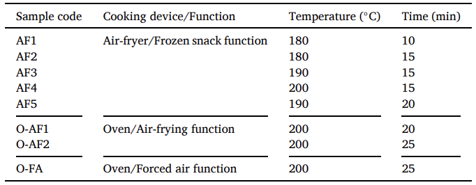
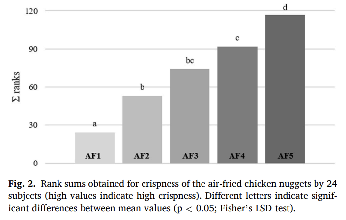

Did you know that McDonalds alone sells over 700 million chicken nuggets annually (MacDonald's Fact Sheet, n.d.)? Chicken nuggets have been a staple part of the American diet since their inception in 1963 (Pearce, 2021). Oil-based frying has been the standard method to cook them, producing crispy and tender nuggets, but the immersion in oil and subsequent high oil content in food can cause cancer, heart disease, and diabetes to arrise (Bazina et al., 2025). The high temperatures and exposure to oxygen also leads to the degradation of nutrients and formation of toxic chemicals such as acrylamide and heterocyclic amines (Bazina et al., 2025). A popular alternative, air-frying relies on the circulation of heated air to cook food, eliminating immersion in oil and lowering oil content. Additionally, air-fryers are smaller and easier to use, while oil can be messy, expensive, and dangerous, making air-fryers a popular option. G. Aliberti et al. at the University of Milan aimed to find the air-frying technique which produced the best nuggets, manipulating device settings, time, and temperature to perfect nugget frying to help consumers avoid the threats of oil based frying.

In order to test this, Aliberti et al. cooked commercial frozen chicken nuggets from Findus, using an air-fryer with temperatures ranging from 180° to 200° celsius, and durations ranging from 10 to 25 minutes, as seen in the table. Each set (designated by a specific sample code) had 14 nuggets cooked in the air-fryer, and 2 sets of nuggets were cooked for each test.
In order to quantify the flavour of the chicken nuggets, Aliberti et al. measured the amount of Maillard reaction products (MRPs), as well 5-hydroxymethyfurfural levels. The Maillard reaction is a chemical reaction between amino acids and sugars to create MRPs that takes place when cooking with high heat. These chemicals are responsible for creating browning, flavoring, and aroma associated with steak, baked goods, and fried food (Yoshida, n.d.). One such MRP, 5-hydroxymethyfurfural (HMF), contributes to the flavor and color of cooked products. Commonly found in honey, coffee, and dried fruits, it is known for contributing sweet, caramel-like flavors. However, it is also a marker for overheating due to the high heat required for its formation and can be toxic in high concentrations (~80-100 mg per kg of body weight, per day) (Appel, n.d.). Both MRPs as a whole and HMFs specifically can be used for determining flavor, but HMF levels are also important to measure separately due to its toxicity and use as a heat marker. Finally, to get direct flavor and texture testing, Aliberti et al. got a panel of 24 impartial volenteers to rank the nuggets based on their crispiness in sets of 5 (1 being least cripy, 5 being crispiest).
So, what did they find? For one, HMF levels and other harmful heat-induced chemicals remained low. AF1, 2 and 3, differing by only up to 5 minutes and 10° C, remained statistically similar at around 2.3-3.2 mg/kg. Meanwhile there was a statistically significant increase with AF4 and 5, at 7.9 and 11.6 mg/kg respectively, as they were cooked at up to 20°C higher for up to 10 minutes longer (Aliberti et al., 2025). Still, all values remained well below what is considered toxic to humans. Simultaneously, as temperature and duration of cooking increased, the amount of MRPs and crispiness increased consistantly.

Figure 2 illustrates the crispiness rankings of the 24 taste-testers, with the y-axis showing the cumulative rank each category (AF1 - 5) received. Looking at Fig. 2, it becomes clear that "the rank sums of perceived crispness significantly increased with increasing time and temperature," (Aliberti et al., 2025) as seen by AF1 with around 25 total score and the lowest time and temperature. Meanwhile, AF5 was 10° C hotter and 15 minutes longer, with a score around 115 (Aliberti et al., 2025).
Aliberti et al. ended up finding that air-frying can yield comparable results to actual oil-based frying given the right settings (Aliberti et al., 2025). Oil frying leads to extreme crispiness but also health issues, such as an upwards of 39% increase in Type II diabetes and heart disease (Heid, n.d.). Air-frying doesn't involve oil immersion at all, lowering health risks while maintaining high levels of crispiness and low levels of toxic chemicals. However, further research can still be performed, on other food items unique to oil frying such as french fries or tempura shrimp or testing for other parameters to solidify the air-fryer's position as an alternative to oil frying. The future of the chicken nugget is here, marking the rise of air-frying as a powerful alternative to oil frying that everyone, even you, can easily use.
References
Aliberti, G., Alamprese, C., Torri, L., Casiraghi, E., & Giovanelli, G. (2025, Febuary 15). Effects of air convection cooking on chicken nugget quality. Science Direct. https://www.sciencedirect.com/science/article/pii/S0023643825001987
Appel, K. E. (n.d.). Toxicology and risk assessment of 5-Hydroxymethylfurfural in food. PubMed. Retrieved March 18, 2026, from https://pubmed.ncbi.nlm.nih.gov/21462333/
Bazina, N., Ahmed, T., & Almdaaf, M. (2025, October 13). Chemical Changes in Deep-Fat Frying: Reaction Mechanisms, Oil Degradation, and Health Implications. National Library of Medicine. pmc.ncbi.nlm.nih.gov/articles/PMC12516161/
Heid, M. (n.d.). Fried Food Linked to Diabetes and Heart Disease-With an Asterisk. TIME. https://time.com/2907248/fried-food-linked-to-diabetes-and-heart-disease-with-an-asterisk/
MacDonald's Fact Sheet. (n.d.). Now Serving: Quality. Retrieved March 18, 2026, from https://corporate.mcdonalds.com/content/dam/sites/corp/nfl/pdf/McD%2040535%20US%20Food%20Quality%20Fact%20Sheet_r22_FINAL_LoRes.pdf
Pearce, J. (2021, March 26). Who Invented Chicken Nuggets? | HISTORY. History.com. Retrieved April 28, 2026, from https://www.history.com/articles/who-invented-chicken-nuggets-mcdonalds
Yoshida, M. (n.d.). Food Processing and Maillard Reaction Products: Effect on Human Health and Nutrition. PMC. Retrieved March 18, 2026, from https://pmc.ncbi.nlm.nih.gov/articles/PMC4745522/